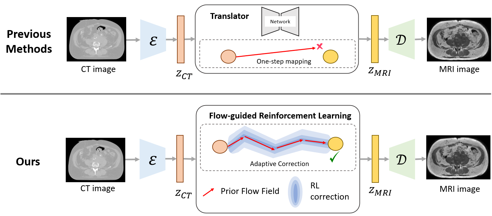

Shared latent space
CT and MRI images are encoded into latent representations using modality-specific VAEs.
535510 RL Team Project · NYCU 2026
A low-resource CT-to-MRI translation framework that treats translation as progressive latent-space navigation. Flow Matching provides a stable global transport prior, while reinforcement learning adds adaptive local trajectory correction.
Overview
CT-to-MRI translation is useful for medical image analysis, but paired CT-MRI data is expensive and limited in real clinical settings. Instead of learning a direct one-step CT-to-MRI latent mapping, this project reformulates translation as a trajectory-guided latent transport problem.
The core idea is to combine a Flow Matching prior with an RL correction policy. The prior gives globally consistent motion toward the MRI latent manifold, while the RL agent learns small local corrections along the path.
Motivation
The PDF file is intentionally not included yet. This page only uses the figures that are already available in the current report draft.
The motivation comes from a key limitation of direct one-step latent alignment: when paired CT-MRI training data is limited, the model may fail to learn reliable cross-modal correspondence. Therefore, this project explores a multi-step latent transport approach, where Flow Matching gives a stable trajectory and reinforcement learning performs adaptive corrections.

Method
The method combines a Prior Flow Generator and a Flow Correction Agent inside a latent transport environment. The Flow Matching prior gives the main direction from CT latent space toward MRI latent space, and the RL policy learns small corrections at each integration step.
CT and MRI images are encoded into latent representations using modality-specific VAEs.
The prior flow gives a smooth multi-step trajectory from CT latent space to MRI latent space.
The RL agent predicts small corrections at each integration step instead of replacing the flow.
The reward measures whether the RL-corrected path improves over pure Flow Matching.
Results
| Method | Paradigm | SSIM ↑ | PSNR ↑ | MAE ↓ |
|---|---|---|---|---|
| ALDM | One-step latent alignment | 0.1023 | 7.486 | 0.3295 |
| Flow Matching | Multi-step ODE | 0.7916 | 16.4415 | 0.1195 |
| Flow-guided RL | Multi-step ODE + adaptive RL | 0.8007 | 16.6080 | 0.0412 |
Key Insight
Post-flow RL acts only after Flow Matching reaches a near-converged endpoint, where the reward landscape is almost flat. Interleaved RL acts at each ODE step, giving denser and more informative feedback for trajectory correction.
Small local corrections preserve the global flow trajectory while improving the final MRI latent.